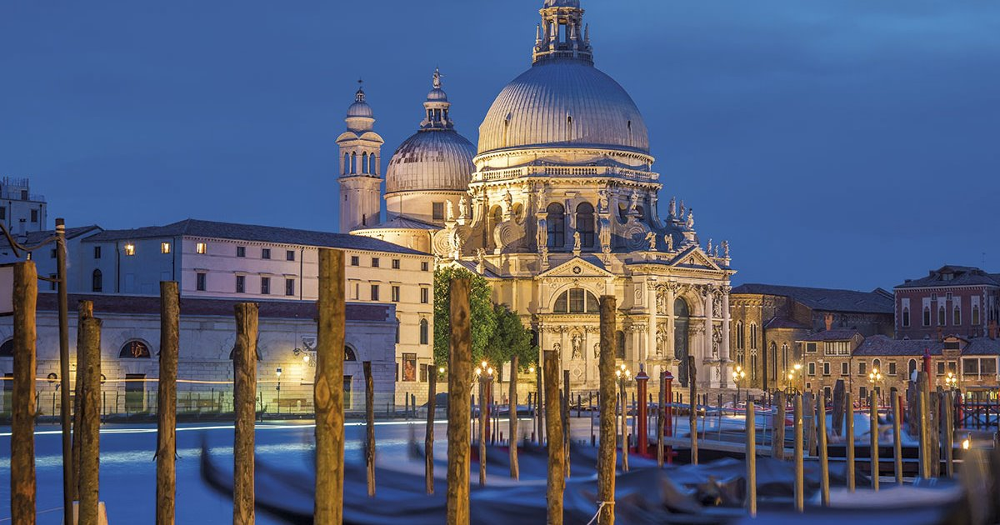
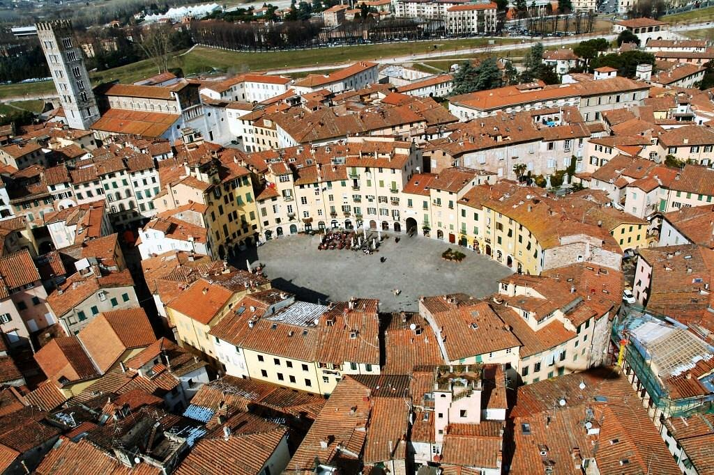
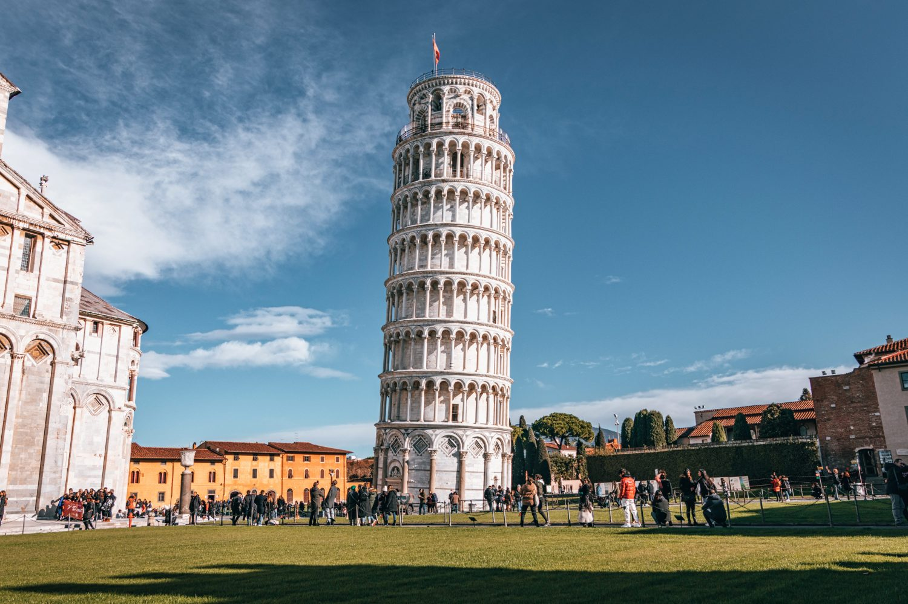
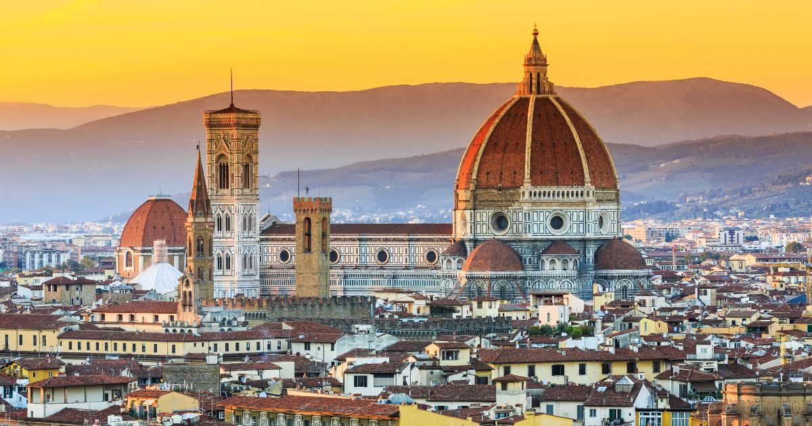
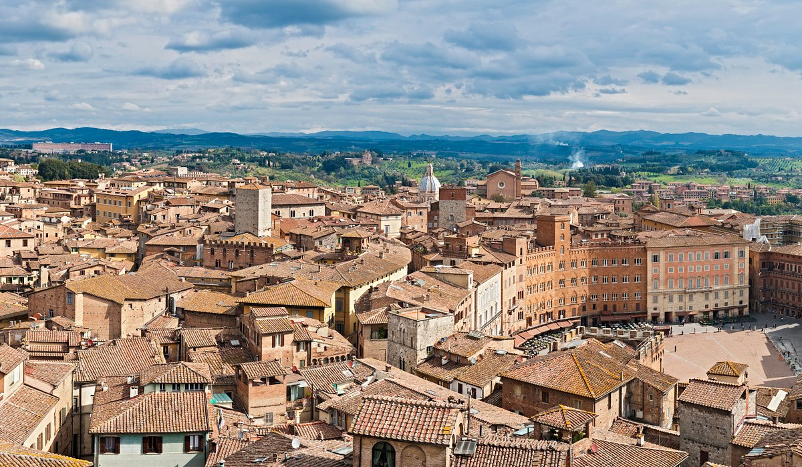
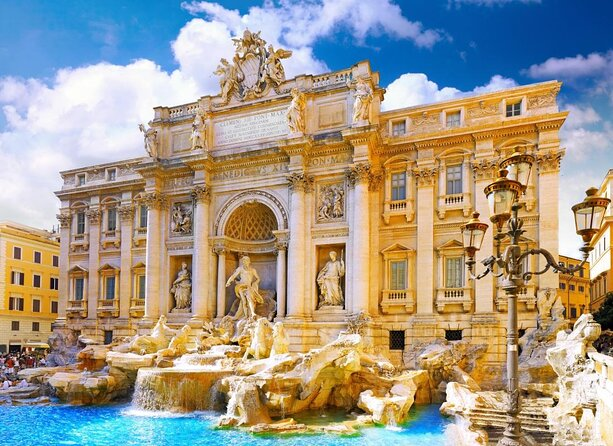
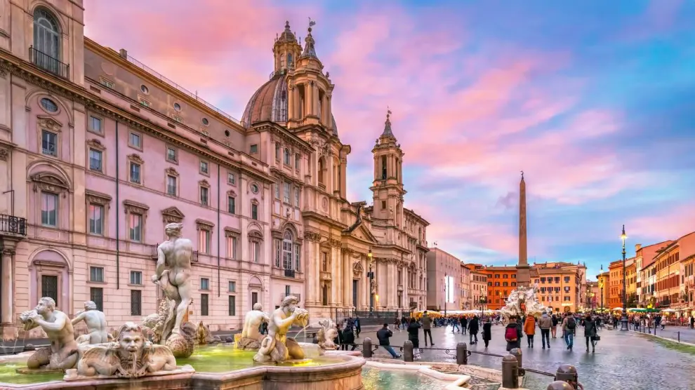
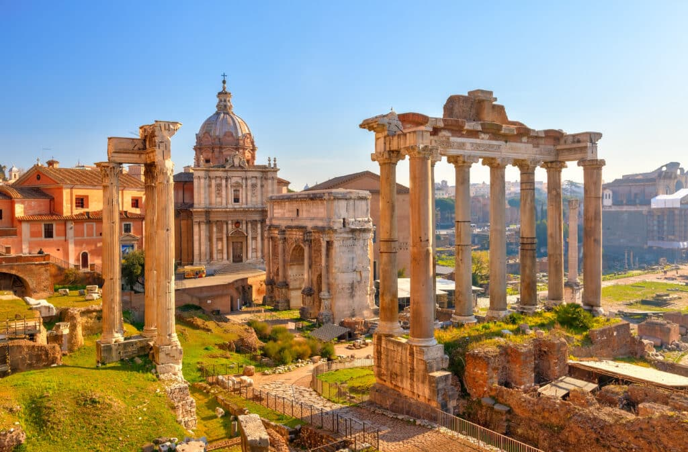
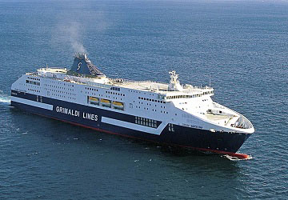

Itinerario del viaje escolar Mendoza a Italia (1 Semana)
Día 1 (25/03/2025)
Venecia

Salida desde I.E.S López de Mendoza hacia aeropuerto de Madrid – Adolfo Suarez (T4).
Llegada prevista al aeropuerto a las 05.45 hrs. Recepción en aeropuerto por parte de personal Nautalia Viajes para trámites de facturación, embarque y salida con destino a Venecia.
Vuelo Previsto Iberia
Vuelo: Madrid – Venecia IB 677 Salida 08.55 hrs – Llegada 11.20 hrs.
Llegada a las 11.20 hrs, recogida de autobús y traslado al muelle de Punta Sabbioni para tomar vaporetto que nos llevará hasta Venecia.
Tiempo libre a disposición del grupo para comer y comenzar a visitar la ciudad. Recogida de guía a las 16.00 hrs. para efectuar visita de Venecia. La ciudad de Venecia conocida como ciudad de los canales, está asentada sobre 118 Islas, teniendo que destacar entre sus muchos atractivos turísticos: San Marcos, Palacio Ducal, El Campanille, Puente de los suspiros, etc.
Duración de visita: 90 min. aprox.
Finalizada la visita regreso al muelle para tomar vaporetto no más tarde de las 20.00 hrs. que nos llevará de nuevo hasta Punta Sabbioni donde estará esperando el autobús a las 20.30 hrs. para realizar el traslado al hotel. Llegada al hotel a las 21.00 hrs. aprox., reparto de habitaciones y alojamiento.
Dia 2 (26/03/2025)
Lucca y Pisa


Desayuno. A las 09.00 hrs. recogida de autobús y salida hacia Lucca. Llegada a Lucca a las 14.00 hrs. aprox. Tiempo libre a disposición del grupo para comer y visitar la ciudad. Lucca es una bella ciudad comparable a Florencia o Roma en cuanto a historia y cultura. Cuenta con un hermoso conjunto de lugares históricos que se conservan intactos, entre ellos su muralla, la catedral del Duomo di San Marino o el anfiteatro romano.
A las 17.30 hrs. aprox. continuación del viaje a Pisa. Llegada a Pisa a las 18.30 hrs aprox. y tiempo libre para visitar la zona monumental de la ciudad donde destaca su famosa torre inclinada. La Torre Inclinada, símbolo de Pisa, es el monumento italiano más conocido del mundo. Junto a la Catedral y al Baptisterio forma parte de un conjunto de obras que el poeta Gabriele D’Annunzio definió “Milagros", y que dio lugar a la denominación de Piazza dei Miracoli (Plaza de los Milagros), haciendo referencia al lugar que los acoge.
Finalizada la visita, a las 20.00 hrs. continuación del viaje hacia Florencia. Llegada a Montecatini a las 20.45 hrs. aprox., traslado al hotel, reparto de habitaciones y alojamiento.
Dia 3 (27/03/2025)
Florencia

Desayuno. A las 09.00 hrs. recogida de autobús y salida hacia Florencia. Recogida de guía a las 10.30 hrs. para efectuar visita de Florencia.La pintoresca Florencia es una de las ciudades más conocidas del mundo. Durante muchos años, Florencia ha sido la cuna de la cultura y del arte, lugar de nacimiento de las grandes figuras del Renacimiento y de la historia de la humanidad.Entre sus principales atractivos destacan su Catedral, Duomo de Santa Mª del Fiore, Baptisterio con su famosa Puerta del Paraíso, Iglesia de Santa Cruz y Plaza de la Signoria.
Duración de visita: 03,00 hrs. aprox.
Finalizada la visita guiada, tiempo libre a disposición del grupo para comer y para seguir conociendo esta maravillosa ciudad.A las 20.00 hrs. recogida de autobús (lugar a concretar con el chofer) y traslado al hotel. Llegada al hotel a las 21.00 hrs. aprox. y alojamiento.
Dia 4 (28/03/2025)
Viaje hacia Roma - San giminiano - Siena

Desayuno. A las 09.00 hrs. recogida de autobús y salida hacia San Gimigniano. Llegada prevista a las 10.30 hrs. aprox. y tiempo libre para visita de la localidad. San Gimignano es un pequeño pueblecito amurallado de origen medieval declarado Patrimonio de la Humanidad por la UNESCO. Es conocido especialmente por las 14 torres medievales que se conservan, que fueron construidas junto con otras 58 en una especie de "competición" en la que las familias más influyentes trataban de demostrar su poder y su riqueza.
A las 12.30 hrs. salida hacia Siena. Llegada prevista a las 13.30 hrs. aprox. y tiempo libre para comer. Recogida de guía a las 15.00 hrs. para efectuar visita de Siena. Siena cuenta con un hermoso centro histórico declarado Patrimonio de la Humanidad por la UNESCO. Localizada en el centro de la hermosa región de la Toscana, Siena es una de las ciudades más atractivas de Italia gracias a su excelente combinación entrearte, historia y el paisaje natural único que la envuelve. Entre sus principales atractivos destacan Piazza del Campo, Duomo, Palazzo Pubblico e Iglesia de San Doménico.
Duración de visita: 90 min. aprox.
A las 17.15 hrs. continuación del viaje hacia Roma. Llegada a Roma a las 20.30 hrs. aprox., traslado al hotel, reparto de habitaciones y alojamiento.
Dia 5 (29/03/2025)
Primera dia de visita a Roma


Desayuno. A las 09.00 hrs. recogida de autobús y salida hacia punto de encuentro con guía en Roma centro. Recogida de guía a las 10.00 hrs. para efectuar visita panorámica en autobús de Roma. Roma con una larga historia a sus espaldas, atrae visitantes de todo el mundo gracias a sus impresionantes monumentos procedentes de la antigüedad. Roma no es solo recorrer una antigua ciudad repleta de restos arqueológicos; Roma es el recuerdo de los Gladiadores, las cuadrigas emprendiendo veloces carreras en el Circo Máximo, y la visión de los sabios romanos paseando mientras conversaban sobre la democracia.
Duración de visita:Total 3 hrs. aprox.
Tiempo libre a disposición del grupo
A las 21.00 hrs. recogida de autobús (lugar a concretar con el chofer) y traslado al hotel. Llegada al hotel a las 21.30 hrs. aprox. y alojamiento.
Dia 6 (30/03/2025)
Segundo dia en roma - Visita Coliseo y foro romano

Desayuno. A las 09.00 hrs. recogida de autobús y salida hacia punto de encuentro con guía en zona Foro Romano y Coliseo. Recogida de guía a las 10.00 hrs. para efectuar visita zona Foro Romano y Coliseo.
Entrada a Coliseo sujeta a disponibilidad de plazas
Duración de visita:Total 3 hrs. aprox.
El Foro Romano fue el bullicioso corazón religioso, administrativo, jurídico y comercial de la ciudad a partir del siglo VII a. C. El Foro se convirtió en un símbolo monumental de piedra y mármol del poder y la vanidad romanos, con templos de emperadores deificados, columnas dedicadas y enormes arcos de triunfo que celebraban las victorias militares de los rincones más lejanos del Imperio. El Foro Romano sigue siendo uno de los lugares más impresionantes de la antigüedad y una ventana única al que fue el mundo glorioso de Roma.
Junto al Foro, se encuentra El Coliseo, llamado en la antigüedad Anfiteatro Flavio, es el anfiteatro más grande construido durante el Imperio Romano y el monumento más impresionante de Roma. El Coliseo es el principal símbolo de Roma, una imponente construcción que, con casi 2.000 años de antigüedad, os hará retroceder en el tiempo para descubrir cómo era la antigua sociedad del Imperio Romano.
Tiempo libre a disposición del grupo.
A las 21.00 hrs. recogida de autobús (lugar a concretar con el chofer) y traslado al hotel. Llegada al hotel a las 21.30 hrs. aprox. y alojamiento.
Dia 7 (31/03/2025)
Visita a la ciudad del vaticano - Ida al ferry direccion Barcelona


Desayuno. A las 09.00 hrs. recogida de autobús (con maletas ya cargadas) y salida hacia Museos Vaticanos y visita.
El Vaticano es una ciudad-estado que se encuentra situada en el corazón de Roma. La ciudad del Vaticano es mundialmente conocida por ser el centro neurálgico de la Iglesia Católica. Para haceros una idea de las dimensiones del Vaticano, lo primero es pensar que se trata del estado más pequeño de toda Europa. Tiene tan sólo 0,44 kilómetros cuadrados y entre sus murallas viven menos de 1.000 personas. En un espacio tan limitado se encuentra la residencia del Papa, un palacio rodeado de jardines que pueden visitarse bajo reserva previa. La independencia de la Santa Sede respecto a Italia se declaró el 11 de febrero de 1929 mediante los Pactos de Letrán.
Finalizada la visita, tiempo libre a disposición del grupo para visitar la ciudad.
A las 17.30 hrs. recogida de autobús (lugar a concretar con el chofer) y salida con dirección al puerto de Civitavecchia. Trámites de embarque en el ferry y salida con dirección a Barcelona. Salida del barco prevista a las 21.30 hrs.Noche a bordo del ferry.
Dia 8 (01/04/2025)
Barcelona - Burgos

Llegada a Barcelona a las 19.30 hrs. del 01/04 y salida en autobús con dirección Burgos.
Llegada a Burgos prevista el 02/04 a las 04.00 hrs aprox. y